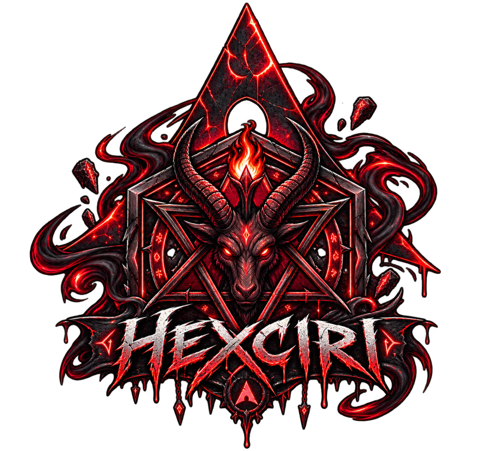

Stop reading about desktop Linux. Just pick one, and use it.
curl -LO https://hexciri.dirty.pizza/hexciri && sh hexciri
Arch × your rules × nothing you didn't ask for.
Niri, Hyprland, Sway, Mango. One menu pick — your monitors, keybinds and theme follow. Try Sway for a week. Go back. Nobody's judging.
Same keys in every WM. Press Mod+K for the full list, any time. Muscle memory survives a swap.
Terminals, Discord, GTK, the works. hexciri-theme-set your entire desktop in one go.
Drop your own in. They survive theme changes, WM swaps, everything.
Steam, Heroic, Minecraft, GeForce NOW, controllers, GPU setup — handled.
Same package manager, same knowledge — everything that runs on Arch runs here. But the default repo holds packages back a month, so updates don't surprise you.
One command. Log out, pick the new WM at the login screen, done.
hexciri-session-set wm=sway shell=noctaliaThe boring stuff, decided for you.
| slot | default | change it |
|---|---|---|
| WM | niri (Hyprland / Sway / Mango too) | hexciri-session-set wm=… |
| shell | noctalia | hexciri-session-set shell=… |
| terminal | kitty | hexciri-defaults |
| shell | bash (login) · fish (kitty) | hexciri-defaults |
| browser | brave-origin | hexciri-defaults |
| files | strata | hexciri-defaults |
| editor | zed | hexciri-defaults |
| kernel | auto: linux (stock), linux-lts on legacy NVIDIA | hexciri-kernel |
| gpu | autodetect (mesa / nvidia-open) | hexciri-gpu |
| theme | sakurazuki | hexciri-theme-set |
| channel | stable · bleeding | hexciri-channel-set |
| boot | systemd-boot, SDDM password/fingerprint greeter | — |
Mod = Super. Mod+K lists everything — in whatever WM you're on.
| key | does |
|---|---|
Mod+D | launch apps |
Mod+Return | terminal |
Mod+Space | quick run |
Mod+Q | close window |
Mod+F | fullscreen |
Mod+1…9, 0 | workspaces |
Mod+Shift+1…9 | move window to workspace |
Mod+←/→ | move between windows |
Mod+Print | screenshot |
Ctrl+Print | screenshot a chosen area |
Mod+Escape | power menu |